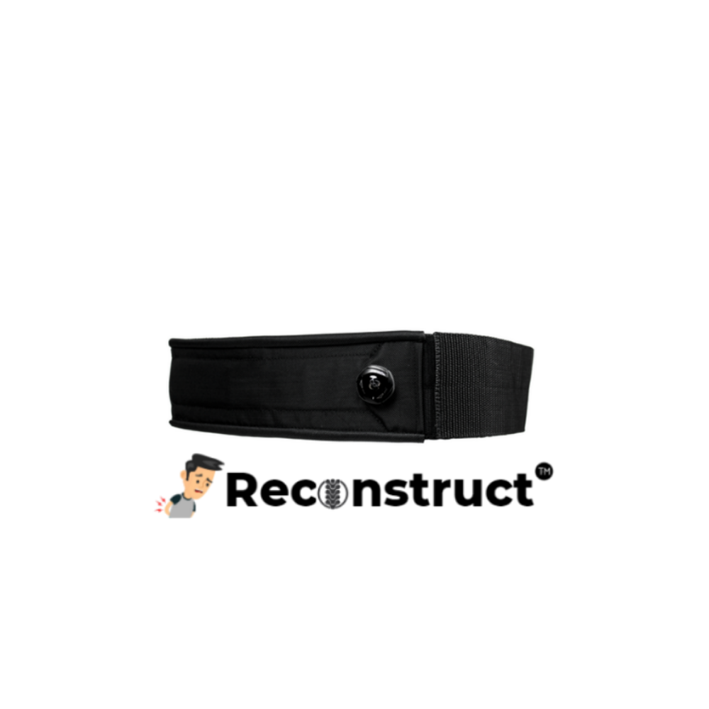

THE RECONSTRUCT PROJECT
A store built
around one product.
A coursework website exploring the journey from learning about a product to placing an order.

A complete customer journey.
The original website includes product information, account registration, login, a fitting guide, ordering, frequently asked questions and contact pages.
This public demo refreshes the layout for phones and desktops, while keeping the project’s product imagery and core form behaviour.
ABOUT THIS PROJECT
From coursework
to a portfolio demo.
The original build
ASP.NET Web Forms, C#, HTML and CSS. Account handling uses ASP.NET Identity. The order page uses validation controls and C# price calculations.
This demo
A separate HTML, CSS and JavaScript version for free static hosting. It demonstrates browsing, form validation and order calculations. Accounts are simulated.
The source
The original C# and ASPX pages are preserved separately. Local account databases and build caches are excluded from publishing.